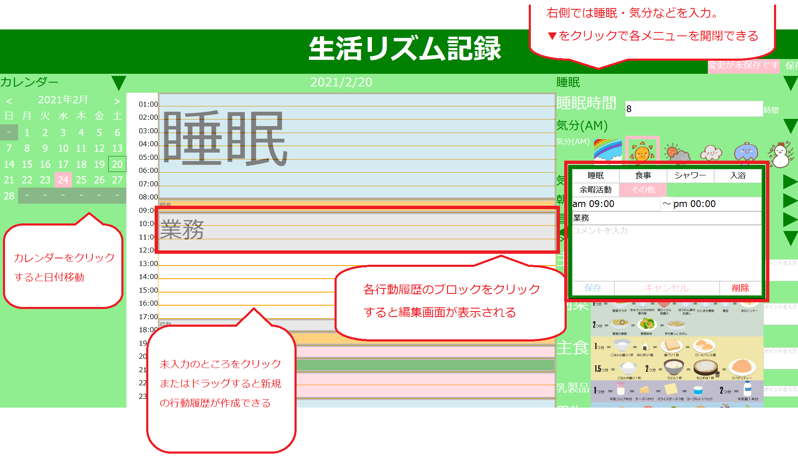
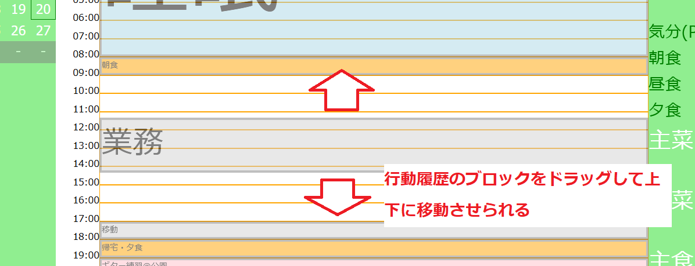
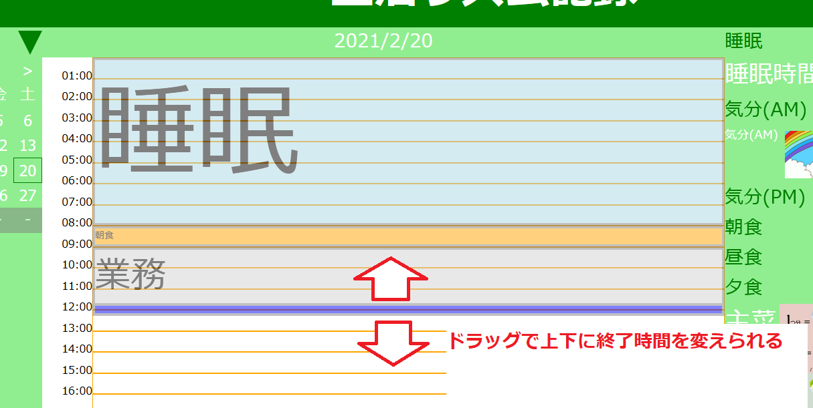
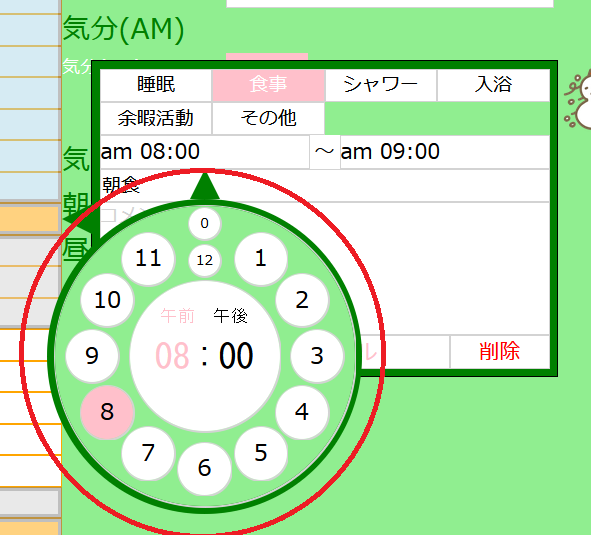

-
生活リズムシート
作品へのリンク
レポジトリへのリンク
概要
事業所では、生活リズムの安定化、ひいては就労安定のために、生活記録をとってモニタリング・改善を図っています。
(社会リズム療法と言われるものです。)
事業所では紙に手書きで行っているものを電子化しました。
使用した技術
JavaScript / PHP / MySQL
簡単な操作方法

力を入れたところ・苦労したところ
-
一日の行動履歴の入力にあたって、作成後のドラッグによる予定の編集を可能にしました。
行動履歴の編集用の窓を開かなくてもドラッグによって時間を延長・短縮したり、長さはそのままに移動することができます。


-
行動履歴の編集用の窓において、時間の入力にテキスト入力でなく時計上でのクリックを可能にしました。

今後の編集予定
-
入力したデータを元に、睡眠時間や気分、食事のポイントをグラフ化して可視化し、モニタリングに活用する。
これがコンテンツ開発の動機でもあります。
- ウィンドウリサイズに対応させる。
-
AWS等のクラウドサーバを利用し、DB保存機能も含めたweb公開を行う。
備考
githubで試験的に公開するにあたってmysqlデータベースへの保存機能はカットしています。
そのため、日付移動すると前のデータが消えてしまいます。
完全なものの公開は現在準備中です。準備ができ次第こちらにリンクを公開します。
-
リバーシ(Java)
web公開は準備中
レポジトリへのリンク
レポジトリ(warファイル)へのリンク
サーバ展開後のアクセスURL: http://[host][:port]/reversi/ControlMain
概要
テーブルゲームのリバーシをJavaで再現を試みました。
使用した技術
Java
力を入れたところ・苦労したところ
- Javaの学習を兼ねていたため、オブジェクト指向を意識して作成しました。
- MVCモデルのModelについて、リバーシのルールからプレイヤーを独立させ、プレイヤーの実装について簡単に拡張できるように試みました。
今後の編集予定
- 作成時に不足していたhtml/CSSの知識を取り入れてjspファイル等スマートに利用する。
- その他アルゴリズムや機械学習を取り入れてプレイヤーモデルを拡張する。
- クラウドサーバでweb公開する。
-
リバーシ(JavaScript)
作品へのリンク
レポジトリへのリンク
概要
テーブルゲームのリバーシをJavaScriptで再現を試みました。
使用した技術
JavaScript
簡単な仕様について
- クリックでゲームが進行する
- プレイヤーは白
- 3回まで間違えて(操作できないマスをクリックして)よい
- 3回間違えるか、正しい操作をすると黒(オート)に切り替わり、次のクリックで黒が操作してくる
- 繰り返していって、連続で両者が3回連続で操作できなくなった時点で決着
今後の編集予定
- ゲーム進行をよりスマートに変える。
現状だとクリックでしか進行できず、メッセージも中途半端なため